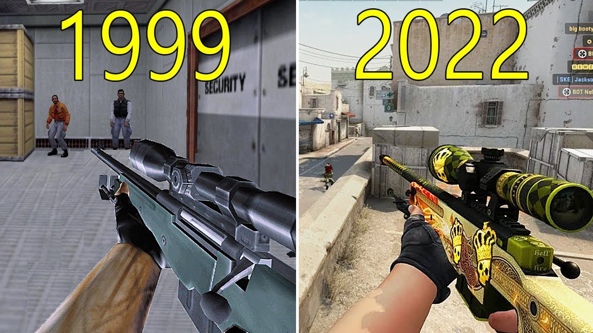
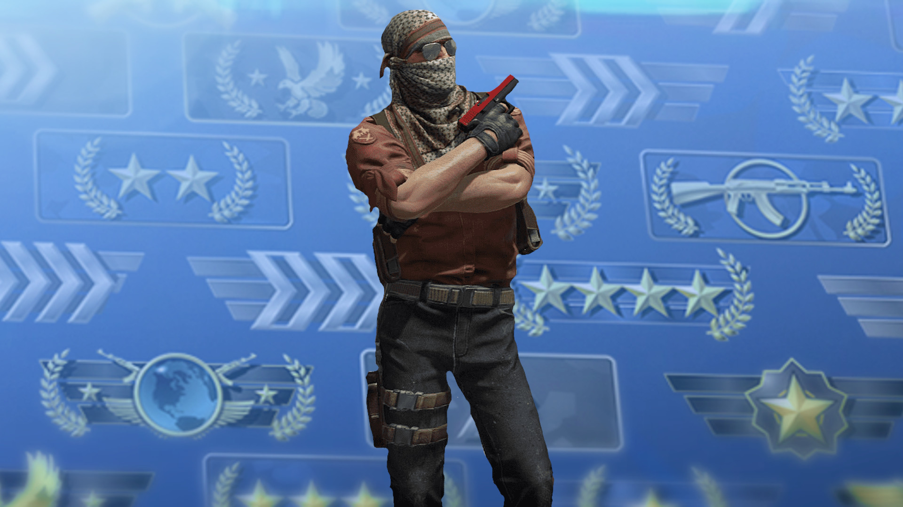

History of Counter Strike
Counter-Strike: Global Offensive (CS:GO) is a renowned first-person shooter game released in 2012. It is the latest installment in the legendary Counter-Strike franchise, which originated as a mod for Half-Life in 1999. The series evolved through various iterations, including Condition Zero and Source. CS:GO modernized the gameplay while preserving its core mechanics. With updated graphics, new maps, and an in-game economy for weapon skins, CS:GO quickly became a dominant force in esports. Regular updates and continued support from Valve ensure its enduring popularity in the gaming community.
CSGO - Game Modes
Competitive
Counter-Strike: Global Offensive (CS:GO) offers an adrenaline-pumping competitive game mode that is at the heart of the game's global popularity. In this mode, two teams, the Terrorists and the Counter-Terrorists, clash in intense 5v5 matches across various maps. The primary objective for the Terrorists is to plant a bomb at designated bomb sites, while the Counter-Terrorists must either defuse the bomb or eliminate the opposing team before the bomb detonates.
CS:GO's competitive mode combines strategic planning, precise aiming, and team coordination, making it a highly engaging experience for players. Each match is divided into two halves, with teams switching sides, and the first team to reach 16 rounds out of 30 wins. With its emphasis on skill, teamwork, and tactical decision-making, CS:GO's competitive mode consistently challenges players and fosters a vibrant global esports community.
Casual
Counter-Strike: Global Offensive (CS:GO) offers a casual game mode that provides a more relaxed and less competitive experience for players. In casual mode, teams still consist of Terrorists and Counter-Terrorists, but the gameplay is more forgiving and less intense compared to the competitive mode.
In casual mode, players can join and leave matches at any time, allowing for a more flexible gaming experience. The matches are typically shorter and played on simplified versions of the maps, which makes it easier for newcomers to learn the basics of the game without the pressure of the competitive environment.
Unlike competitive mode, there is no strict team-killing penalty in casual mode, although players are encouraged to play cooperatively and support their teammates. Casual mode also offers more relaxed rules for purchasing weapons and equipment, enabling players to experiment with different strategies and playstyles.

Deathmatch
In Counter-Strike: Global Offensive (CS:GO), deathmatch is an action-packed and fast-paced game mode that focuses on intense combat and individual skill development. Unlike the standard game modes, deathmatch is all about relentless shooting and respawning.
In deathmatch, players are pitted against each other, with no team restrictions. The objective is simple: eliminate as many opponents as possible within a given time limit. As soon as a player is eliminated, they respawn instantly, allowing for constant action and practice opportunities.

This game mode is particularly popular for honing shooting accuracy, reflexes, and weapon handling. It offers a great environment for players to experiment with different weapons, learn recoil patterns, and improve their aiming skills without the pressure of playing in a competitive setting.
Whether players are looking to warm up before a match, refine their skills, or simply enjoy a fast-paced shooting experience, CS:GO's deathmatch provides a thrilling and engaging gameplay option that appeals to both new and experienced players alike.
Best Practices and Tips 💡
To become a better player in Counter-Strike: Global Offensive (CS:GO), you need a combination of skill, strategy, and teamwork. Here are some essential tips to help you improve your gameplay:
1. Aim Practice: Spend time practicing your aim in aim maps or using aim training maps. Consistent and accurate aiming is crucial in CS:GO.
2. Crosshair Placement: Always keep your crosshair at head level and aimed at common angles where enemies might appear. This will give you an advantage in reacting quickly to opponents.
3. Communication: Effective communication is key in CS:GO. Use in-game voice chat or text chat to relay important information to your team, such as enemy positions and strategies.